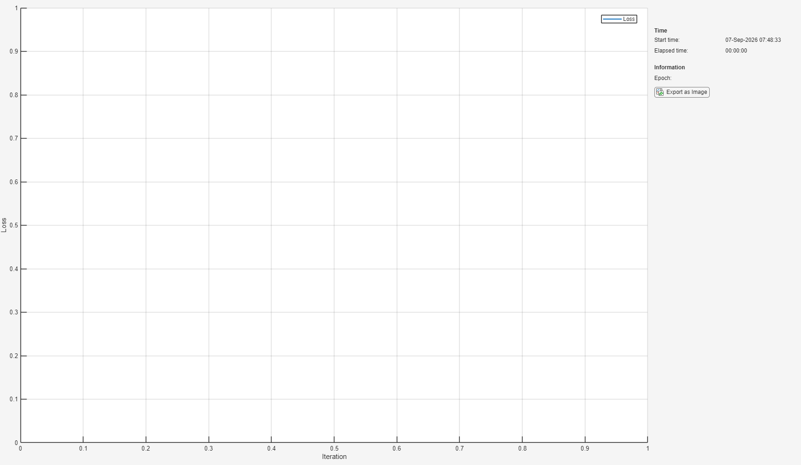
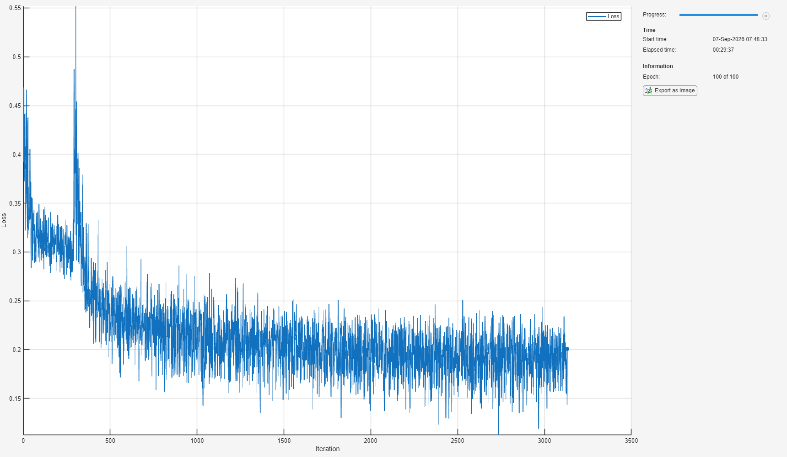
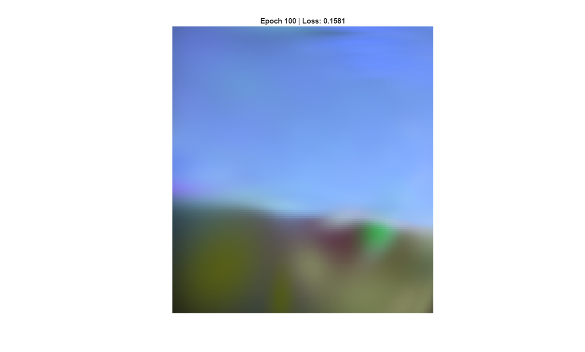
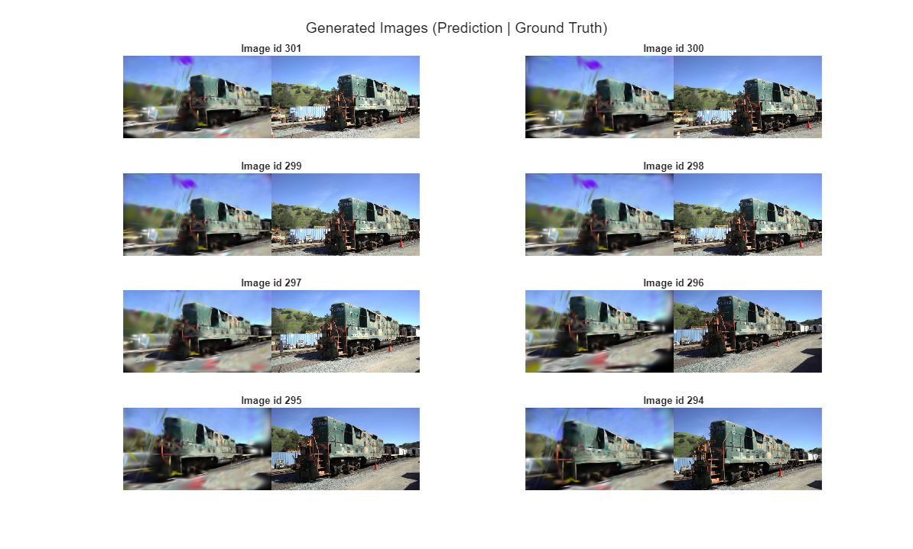

Train 3D Gaussian Splatting (3DGS)
This example shows how-to train and generate 2D images using a minimal implementation of 3D Gaussian splatting.
GPU Target: NVIDIA RTX 4050 Laptop GPU - 6 GB GDDR6 VRAM - 192 GB/s memory bandwidth - 2560 CUDA cores (Ada Lovelace)
Image Loading Design: Images are loaded as a blockedImageDatastore (ColmapData.images); each read() returns one fixed-size block (blockSize + 2*overlap), not a full image. Camera info is repeated once per block with cx/cy shifted to the block's local origin, so combine(obj.data.images, obj.data.cameras) still gives strict 1-to-1 correspondence. blockSize defaults to GaussianSplatter.autoSelectBlockSize(), which picks the size (per dimension, in [64, 160]) that minimizes total partial-block zero-padding summed over both resolution levels.
GPU-Vectorized Rendering: Rasterization no longer loops per-Gaussian or per-batch-element: - projectGaussiansWithCulling processes all Gaussians x all blocks in the batch as [N x B] arrays in one pass (camera transform, projection, Sigma_2D via an elementwise J*Sigma*J^T, depth sort), scattering results into persistent buffers by pure indexing. - rasterizeToGPU composites depth-sorted Gaussians in vectorized chunks per tile (fused [H' x W' x K] alpha maps, cumprod transmittance, one image write per tile), with a per-chunk (not per-Gaussian) early-termination check once a tile saturates. Because the L1/SSIM loss is computed directly on this.image/this.image_gt (now block-sized), the loss is automatically scoped to the block instead of the full image — increasing miniBatchSize below now simply increases the number of blocks processed per training step.
Multi-Resolution Schedule: Training starts at half resolution (fast early convergence). At levelSwitchEpoch: setLevel(1) swaps both the image and camera datastores (block layout differs per resolution), then updateResolution() reallocates GPU buffers to the new block canvas size. Without updateResolution(), GPU buffers stay at half-res dimensions.
Contents
- Load Data
- Blocked Image / Tile Settings
- Define Learnable Parameters
- Specify Training Options
- Multi-Resolution Schedule
- Train Model
- Create minibatchqueue
- Adaptive Densification Settings
- Initialize Adam Optimizer State
- Training Progress Bookkeeping
- Initialize Preview Render Index
- Custom Training Loop
- Preview Results
Load Data
Specify the folder containing the SFM generated sparse 3D point cloud as input, generated in COLMAP format. Download example dataset from: https://repo-sam.inria.fr/fungraph/3d-gaussian-splatting/datasets/input/tandt_db.zip
datasetPath = 'C:\Source\tandt_db\tandt\train'; % Update this path numGaussians = 2000; % More Gaussians creates sharper images, but needs more % memory and has longer training time. numImages = 20;
Blocked Image / Tile Settings
Block/tile size used both by ColmapData's blockedImageDatastore (dataset block grid) and by GaussianSplatter.createImage's internal tile-culling loop. overlapSize adds a context halo (BorderSize) around each block; it does NOT change the block grid, so it has no effect on padding — only blockSize does.
Leaving blockSize empty lets GaussianSplatter.autoSelectBlockSize() pick the size (per dimension, in [64, 160]) that minimizes total partial-block zero-padding summed over both resolution levels.
blockSize = []; overlapSize = [8, 8];
Define Learnable Parameters
Construct object to load data and create learnable parameters.
obj = GaussianSplatter(datasetPath, numGaussians, numImages, blockSize, overlapSize);
Auto-selected block size: [137 123] (full canvas 273x490, half 137x245) GaussianSplatter running in GPU mode. Loading COLMAP data from C:\Source\tandt_db\tandt\train\sparse\0... Loading cameras... Loading images... Loading 3D points... Loaded: 1 cameras, 301 images, 182686 points3D Processing metadata... Initializing Gaussians... Building blocked-image datastores (Half + Full resolution)... ColmapData initialisation complete.
Specify Training Options
miniBatchSize now counts BLOCKS (not full images) per training step — raise it to increase the number of blocked images processed per batch.
totalNumBlocks = obj.data.images.TotalNumBlocks;
miniBatchSize = 2*totalNumBlocks/numImages;
numEpochs = ceil(numGaussians / 20);
% Adam optimization options
learnRate = 0.02;
learnInterval = ceil(numEpochs / 5);
gradDecay = 1 - miniBatchSize / totalNumBlocks;
sqGradDecay = 0.999;
Multi-Resolution Schedule
Switch from half-resolution to full resolution at 30% of total epochs. After setLevel(1), updateResolution() must be called to reallocate GPU buffers (image, X, Y, T) to the new canvas dimensions. Without this, buffers remain at half-resolution, clipping Gaussian projections.
levelSwitchEpoch = max(1, floor(numEpochs * 0.3));
Train Model
To save time, load a pretrained network by setting doTraining to false. To train the network yourself, set doTraining to true.
doTraining = true;
Create minibatchqueue
combine() merges the blocked-image datastore with the per-block camera arrayDatastores. 1-to-1 correspondence is guaranteed because ColmapData repeats/offsets one camera entry per block, matching blockedImageDatastore's read order.
OutputEnvironment='gpu' transfers each block directly to GPU VRAM on the RTX 4050, bypassing a redundant CPU staging copy.
MiniBatchFormat: Image: 'SSCB' (H × W × Channel × Batch) Camera scalars: 'CB' (1 × Batch — arrayDatastore adds leading dim) Rcw rotation: 'SSCB' (3 × 3 × 1 × Batch) tcw, twc vectors: 'SCB' (3 × 1 × Batch)
ds = combine(obj.data.images, obj.data.cameras); mbq = minibatchqueue(ds, ... 'MiniBatchSize', miniBatchSize, ... 'PartialMiniBatch', 'discard', ... 'OutputEnvironment',GaussianSplatter.outEnv(obj.useGPU), ... 'MiniBatchFormat', ["SSCB","CB","CB","CB","CB","CB","CB","CB","CB","CB","CB","SSCB","SCB","SCB"]);
Adaptive Densification Settings
enableAdaptiveDensification = true; densifyInterval = ceil(numEpochs / 25); prunningRatio = 0.05;
Initialize Adam Optimizer State
avgGrad = []; avgSqGrad = [];
Training Progress Bookkeeping
numIterationsPerEpoch = ceil(totalNumBlocks / miniBatchSize); numIterations = numEpochs * numIterationsPerEpoch; if doTraining monitor = trainingProgressMonitor( ... 'Metrics', "Loss", ... 'Info', "Epoch", ... 'XLabel', "Iteration"); end

Initialize Preview Render Index
Lock onto a single, unique blockId (not the reused source-image id) so the live preview always shows the same physical block across epochs.
blockIdxToShow = 1;
Custom Training Loop
if doTraining iteration = 0; epoch = 0; while epoch < numEpochs && ~monitor.Stop epoch = epoch + 1; % ----------------------------------------------------------------- % Multi-resolution schedule. % Step 1: setLevel(1) swaps obj.data.images/cameras from the Half % pair to the Full pair (block layout differs per level, % so images and cameras must switch together). % Step 2: updateResolution() reads the new block canvas size from % the datastore and reallocates GPU buffers (image, X, Y, T). % Without this call, GPU buffers stay at half-res size. % Step 3: Rebuild ds and mbq so they reference the new datastores, % and recompute totalNumBlocks/gradDecay (block count per % image differs between resolution levels). % ----------------------------------------------------------------- if epoch == levelSwitchEpoch obj.data.setLevel(1); obj.updateResolution(); ds = combine(obj.data.images, obj.data.cameras); mbq = minibatchqueue(ds, ... 'MiniBatchSize', miniBatchSize, ... 'PartialMiniBatch', 'discard', ... 'OutputEnvironment',GaussianSplatter.outEnv(obj.useGPU), ... 'MiniBatchFormat', ["SSCB","CB","CB","CB","CB","CB","CB","CB","CB","CB","CB","SSCB","SCB","SCB"]); totalNumBlocks = obj.data.images.TotalNumBlocks; gradDecay = 1 - miniBatchSize / totalNumBlocks; numIterationsPerEpoch = ceil(totalNumBlocks / miniBatchSize); fprintf('Switched to full-resolution training at epoch %d.\n', epoch); % Print GPU Memory obj.printGPUMemory(sprintf('[Resolution Switch] Epoch %d', epoch)); end % Shuffle data at the start of each epoch shuffle(mbq); while hasdata(mbq) && ~monitor.Stop iteration = iteration + 1; % Fetch next mini-batch. Data arrives on GPU (OutputEnvironment='gpu'). % Camera scalars arrive as 'CB' (1×B); squeeze removes leading dim. % blockRow/blockCol are only needed for post-training stitching, % so they're ignored (~) in the hot training loop. [obj.image_gt, camId, camBlockId, ~, ~, camW, camH, camFx, camFy, camCx, camCy, ... obj.camera.Rcw, obj.camera.tcw, obj.camera.twc] = next(mbq); obj.camera.id = squeeze(camId); obj.camera.blockId = squeeze(camBlockId); obj.camera.width = squeeze(camW); obj.camera.height = squeeze(camH); obj.camera.fx = squeeze(camFx); obj.camera.fy = squeeze(camFy); obj.camera.cx = squeeze(camCx); obj.camera.cy = squeeze(camCy); if iteration == 1 % Initialize GPU storage once on the first iteration obj.initStorage(miniBatchSize); % Print GPU Memory obj.printGPUMemory('[Iteration 1] After GPU allocation'); end % Forward pass, loss computation, and gradient calculation [loss, grads] = dlfeval(@obj.modelStep, obj.params); % Update learnable parameters with Adam optimizer [obj.params, avgGrad, avgSqGrad] = adamupdate( ... obj.params, grads, avgGrad, avgSqGrad, ... iteration, learnRate, gradDecay, sqGradDecay); % Extract scalar loss for logging loss = extractdata(loss); % Update training progress monitor recordMetrics(monitor, iteration, Loss=loss); updateInfo(monitor, Epoch=epoch + " of " + numEpochs); monitor.Progress = min(max(100 * iteration / numIterations,0),100); % Visualize the current render for a fixed reference block idx = find(extractdata(obj.camera.blockId) == blockIdxToShow); if ~isempty(idx) figure(1); imshow(extractdata(obj.image(:,:,:,idx))); title(sprintf('Epoch %d | Loss: %.4f', epoch, loss)); drawnow; % Print GPU Memory obj.printGPUMemory(sprintf('[Periodic Monitoring] Epoch %d', epoch)); end end % ----------------------------------------------------------------- % Adaptive densification: prune dead Gaussians and clone/split % high-gradient ones to increase scene detail over time. % ----------------------------------------------------------------- if enableAdaptiveDensification && ... mod(epoch, densifyInterval) == 0 && ... epoch > 1 && epoch < numEpochs obj.printGPUMemory(sprintf('[Before Densify] Epoch %d', epoch)); obj.pruneAndDensify(avgGrad, avgSqGrad, prunningRatio); obj.printGPUMemory(sprintf('[After Densify] Epoch %d', epoch)); end % Decay learning rate at regular intervals if mod(epoch, learnInterval) == 0 && epoch > 1 && epoch < numEpochs learnRate = 0.5 * learnRate; end end % Save trained Gaussian parameters to disk obj.saveGaussians("gaussians.mat"); end
Allocating persistent projection buffers (2000 Gaussians)... Moving learnable parameters to GPU... [[Iteration 1] After GPU allocation] GPU memory used: 1118.31 MB / 6438.78 MB [[Periodic Monitoring] Epoch 1] GPU memory used: 1388.47 MB / 6438.78 MB [[Periodic Monitoring] Epoch 2] GPU memory used: 1448.49 MB / 6438.78 MB [[Periodic Monitoring] Epoch 3] GPU memory used: 1488.54 MB / 6438.78 MB [[Periodic Monitoring] Epoch 4] GPU memory used: 1542.56 MB / 6438.78 MB [[Before Densify] Epoch 4] GPU memory used: 1567.48 MB / 6438.78 MB Densification: 62 clones, 38 splits. [[After Densify] Epoch 4] GPU memory used: 1567.48 MB / 6438.78 MB [[Periodic Monitoring] Epoch 5] GPU memory used: 1615.42 MB / 6438.78 MB [[Periodic Monitoring] Epoch 6] GPU memory used: 1674.49 MB / 6438.78 MB [[Periodic Monitoring] Epoch 7] GPU memory used: 1665.48 MB / 6438.78 MB [[Periodic Monitoring] Epoch 8] GPU memory used: 1618.54 MB / 6438.78 MB [[Before Densify] Epoch 8] GPU memory used: 1563.47 MB / 6438.78 MB Densification: 63 clones, 37 splits. [[After Densify] Epoch 8] GPU memory used: 1563.47 MB / 6438.78 MB [[Periodic Monitoring] Epoch 9] GPU memory used: 1536.83 MB / 6438.78 MB [[Periodic Monitoring] Epoch 10] GPU memory used: 1621.94 MB / 6438.78 MB [[Periodic Monitoring] Epoch 11] GPU memory used: 1619.98 MB / 6438.78 MB [[Periodic Monitoring] Epoch 12] GPU memory used: 1514.37 MB / 6438.78 MB [[Before Densify] Epoch 12] GPU memory used: 1588.61 MB / 6438.78 MB Densification: 68 clones, 32 splits. [[After Densify] Epoch 12] GPU memory used: 1588.61 MB / 6438.78 MB [[Periodic Monitoring] Epoch 13] GPU memory used: 1728.91 MB / 6438.78 MB [[Periodic Monitoring] Epoch 14] GPU memory used: 1695.32 MB / 6438.78 MB [[Periodic Monitoring] Epoch 15] GPU memory used: 1711.56 MB / 6438.78 MB [[Periodic Monitoring] Epoch 16] GPU memory used: 1660.26 MB / 6438.78 MB [[Before Densify] Epoch 16] GPU memory used: 1645.82 MB / 6438.78 MB Densification: 72 clones, 28 splits. [[After Densify] Epoch 16] GPU memory used: 1645.82 MB / 6438.78 MB [[Periodic Monitoring] Epoch 17] GPU memory used: 1739.67 MB / 6438.78 MB [[Periodic Monitoring] Epoch 18] GPU memory used: 1858.93 MB / 6438.78 MB [[Periodic Monitoring] Epoch 19] GPU memory used: 1841.05 MB / 6438.78 MB [[Periodic Monitoring] Epoch 20] GPU memory used: 1672.39 MB / 6438.78 MB [[Before Densify] Epoch 20] GPU memory used: 1683.12 MB / 6438.78 MB Densification: 71 clones, 29 splits. [[After Densify] Epoch 20] GPU memory used: 1683.12 MB / 6438.78 MB [[Periodic Monitoring] Epoch 21] GPU memory used: 1852.61 MB / 6438.78 MB [[Periodic Monitoring] Epoch 22] GPU memory used: 1808.95 MB / 6438.78 MB [[Periodic Monitoring] Epoch 23] GPU memory used: 1854.78 MB / 6438.78 MB [[Periodic Monitoring] Epoch 24] GPU memory used: 1738.50 MB / 6438.78 MB [[Before Densify] Epoch 24] GPU memory used: 1770.09 MB / 6438.78 MB Densification: 73 clones, 27 splits. [[After Densify] Epoch 24] GPU memory used: 1770.09 MB / 6438.78 MB [[Periodic Monitoring] Epoch 25] GPU memory used: 1633.14 MB / 6438.78 MB [[Periodic Monitoring] Epoch 26] GPU memory used: 1827.61 MB / 6438.78 MB [[Periodic Monitoring] Epoch 27] GPU memory used: 1724.69 MB / 6438.78 MB [[Periodic Monitoring] Epoch 28] GPU memory used: 1725.25 MB / 6438.78 MB [[Before Densify] Epoch 28] GPU memory used: 1669.08 MB / 6438.78 MB Densification: 73 clones, 27 splits. [[After Densify] Epoch 28] GPU memory used: 1669.08 MB / 6438.78 MB [[Periodic Monitoring] Epoch 29] GPU memory used: 1651.38 MB / 6438.78 MB Switched to full-resolution datastore. Allocating persistent projection buffers (2000 Gaussians)... Moving learnable parameters to GPU... GPU buffers reallocated to 153 x 139 canvas (separable coords). Switched to full-resolution training at epoch 30. [[Resolution Switch] Epoch 30] GPU memory used: 1677.01 MB / 6438.78 MB [[Periodic Monitoring] Epoch 30] GPU memory used: 1697.57 MB / 6438.78 MB [[Periodic Monitoring] Epoch 31] GPU memory used: 1861.59 MB / 6438.78 MB [[Periodic Monitoring] Epoch 32] GPU memory used: 1776.88 MB / 6438.78 MB [[Before Densify] Epoch 32] GPU memory used: 1722.90 MB / 6438.78 MB Densification: 50 clones, 50 splits. [[After Densify] Epoch 32] GPU memory used: 1722.90 MB / 6438.78 MB [[Periodic Monitoring] Epoch 33] GPU memory used: 1756.57 MB / 6438.78 MB [[Periodic Monitoring] Epoch 34] GPU memory used: 1774.47 MB / 6438.78 MB [[Periodic Monitoring] Epoch 35] GPU memory used: 1699.59 MB / 6438.78 MB [[Periodic Monitoring] Epoch 36] GPU memory used: 1664.63 MB / 6438.78 MB [[Before Densify] Epoch 36] GPU memory used: 1815.24 MB / 6438.78 MB Densification: 53 clones, 47 splits. [[After Densify] Epoch 36] GPU memory used: 1815.24 MB / 6438.78 MB [[Periodic Monitoring] Epoch 37] GPU memory used: 1737.31 MB / 6438.78 MB [[Periodic Monitoring] Epoch 38] GPU memory used: 1729.45 MB / 6438.78 MB [[Periodic Monitoring] Epoch 39] GPU memory used: 1844.52 MB / 6438.78 MB [[Periodic Monitoring] Epoch 40] GPU memory used: 1718.43 MB / 6438.78 MB [[Before Densify] Epoch 40] GPU memory used: 1822.74 MB / 6438.78 MB Densification: 57 clones, 43 splits. [[After Densify] Epoch 40] GPU memory used: 1822.74 MB / 6438.78 MB [[Periodic Monitoring] Epoch 41] GPU memory used: 1708.11 MB / 6438.78 MB [[Periodic Monitoring] Epoch 42] GPU memory used: 1699.60 MB / 6438.78 MB [[Periodic Monitoring] Epoch 43] GPU memory used: 1742.25 MB / 6438.78 MB [[Periodic Monitoring] Epoch 44] GPU memory used: 1858.91 MB / 6438.78 MB [[Before Densify] Epoch 44] GPU memory used: 1813.20 MB / 6438.78 MB Densification: 55 clones, 45 splits. [[After Densify] Epoch 44] GPU memory used: 1813.20 MB / 6438.78 MB [[Periodic Monitoring] Epoch 45] GPU memory used: 1714.77 MB / 6438.78 MB [[Periodic Monitoring] Epoch 46] GPU memory used: 1766.63 MB / 6438.78 MB [[Periodic Monitoring] Epoch 47] GPU memory used: 1807.07 MB / 6438.78 MB [[Periodic Monitoring] Epoch 48] GPU memory used: 1679.73 MB / 6438.78 MB [[Before Densify] Epoch 48] GPU memory used: 1797.32 MB / 6438.78 MB Densification: 50 clones, 50 splits. [[After Densify] Epoch 48] GPU memory used: 1797.32 MB / 6438.78 MB [[Periodic Monitoring] Epoch 49] GPU memory used: 1764.49 MB / 6438.78 MB [[Periodic Monitoring] Epoch 50] GPU memory used: 1775.04 MB / 6438.78 MB [[Periodic Monitoring] Epoch 51] GPU memory used: 1644.77 MB / 6438.78 MB [[Periodic Monitoring] Epoch 52] GPU memory used: 1716.47 MB / 6438.78 MB [[Before Densify] Epoch 52] GPU memory used: 1751.02 MB / 6438.78 MB Densification: 54 clones, 46 splits. [[After Densify] Epoch 52] GPU memory used: 1751.02 MB / 6438.78 MB [[Periodic Monitoring] Epoch 53] GPU memory used: 1659.95 MB / 6438.78 MB [[Periodic Monitoring] Epoch 54] GPU memory used: 1757.18 MB / 6438.78 MB [[Periodic Monitoring] Epoch 55] GPU memory used: 1825.51 MB / 6438.78 MB [[Periodic Monitoring] Epoch 56] GPU memory used: 1783.43 MB / 6438.78 MB [[Before Densify] Epoch 56] GPU memory used: 1863.86 MB / 6438.78 MB Densification: 53 clones, 47 splits. [[After Densify] Epoch 56] GPU memory used: 1863.86 MB / 6438.78 MB [[Periodic Monitoring] Epoch 57] GPU memory used: 1861.72 MB / 6438.78 MB [[Periodic Monitoring] Epoch 58] GPU memory used: 1790.26 MB / 6438.78 MB [[Periodic Monitoring] Epoch 59] GPU memory used: 1722.81 MB / 6438.78 MB [[Periodic Monitoring] Epoch 60] GPU memory used: 1742.00 MB / 6438.78 MB [[Before Densify] Epoch 60] GPU memory used: 1765.30 MB / 6438.78 MB Densification: 55 clones, 45 splits. [[After Densify] Epoch 60] GPU memory used: 1765.30 MB / 6438.78 MB [[Periodic Monitoring] Epoch 61] GPU memory used: 1701.95 MB / 6438.78 MB [[Periodic Monitoring] Epoch 62] GPU memory used: 1736.01 MB / 6438.78 MB [[Periodic Monitoring] Epoch 63] GPU memory used: 1622.31 MB / 6438.78 MB [[Periodic Monitoring] Epoch 64] GPU memory used: 1768.35 MB / 6438.78 MB [[Before Densify] Epoch 64] GPU memory used: 1715.24 MB / 6438.78 MB Densification: 61 clones, 39 splits. [[After Densify] Epoch 64] GPU memory used: 1715.24 MB / 6438.78 MB [[Periodic Monitoring] Epoch 65] GPU memory used: 1727.07 MB / 6438.78 MB [[Periodic Monitoring] Epoch 66] GPU memory used: 1771.94 MB / 6438.78 MB [[Periodic Monitoring] Epoch 67] GPU memory used: 1776.55 MB / 6438.78 MB [[Periodic Monitoring] Epoch 68] GPU memory used: 1773.32 MB / 6438.78 MB [[Before Densify] Epoch 68] GPU memory used: 1749.10 MB / 6438.78 MB Densification: 54 clones, 45 splits. [[After Densify] Epoch 68] GPU memory used: 1749.10 MB / 6438.78 MB [[Periodic Monitoring] Epoch 69] GPU memory used: 1774.72 MB / 6438.78 MB [[Periodic Monitoring] Epoch 70] GPU memory used: 1810.69 MB / 6438.78 MB [[Periodic Monitoring] Epoch 71] GPU memory used: 1887.29 MB / 6438.78 MB [[Periodic Monitoring] Epoch 72] GPU memory used: 1783.78 MB / 6438.78 MB [[Before Densify] Epoch 72] GPU memory used: 1821.15 MB / 6438.78 MB Densification: 45 clones, 55 splits. [[After Densify] Epoch 72] GPU memory used: 1821.15 MB / 6438.78 MB [[Periodic Monitoring] Epoch 73] GPU memory used: 1725.08 MB / 6438.78 MB [[Periodic Monitoring] Epoch 74] GPU memory used: 1765.30 MB / 6438.78 MB [[Periodic Monitoring] Epoch 75] GPU memory used: 1735.19 MB / 6438.78 MB [[Periodic Monitoring] Epoch 76] GPU memory used: 1867.40 MB / 6438.78 MB [[Before Densify] Epoch 76] GPU memory used: 1835.82 MB / 6438.78 MB Densification: 54 clones, 42 splits. [[After Densify] Epoch 76] GPU memory used: 1835.82 MB / 6438.78 MB [[Periodic Monitoring] Epoch 77] GPU memory used: 1771.54 MB / 6438.78 MB [[Periodic Monitoring] Epoch 78] GPU memory used: 1676.01 MB / 6438.78 MB [[Periodic Monitoring] Epoch 79] GPU memory used: 1718.45 MB / 6438.78 MB [[Periodic Monitoring] Epoch 80] GPU memory used: 1735.56 MB / 6438.78 MB [[Before Densify] Epoch 80] GPU memory used: 1764.81 MB / 6438.78 MB Densification: 62 clones, 37 splits. [[After Densify] Epoch 80] GPU memory used: 1764.81 MB / 6438.78 MB [[Periodic Monitoring] Epoch 81] GPU memory used: 1721.04 MB / 6438.78 MB [[Periodic Monitoring] Epoch 82] GPU memory used: 1721.21 MB / 6438.78 MB [[Periodic Monitoring] Epoch 83] GPU memory used: 1712.92 MB / 6438.78 MB [[Periodic Monitoring] Epoch 84] GPU memory used: 1734.05 MB / 6438.78 MB [[Before Densify] Epoch 84] GPU memory used: 1758.44 MB / 6438.78 MB Densification: 72 clones, 24 splits. [[After Densify] Epoch 84] GPU memory used: 1758.44 MB / 6438.78 MB [[Periodic Monitoring] Epoch 85] GPU memory used: 1685.10 MB / 6438.78 MB [[Periodic Monitoring] Epoch 86] GPU memory used: 1820.26 MB / 6438.78 MB [[Periodic Monitoring] Epoch 87] GPU memory used: 1737.96 MB / 6438.78 MB [[Periodic Monitoring] Epoch 88] GPU memory used: 1735.71 MB / 6438.78 MB [[Before Densify] Epoch 88] GPU memory used: 1880.46 MB / 6438.78 MB Densification: 65 clones, 32 splits. [[After Densify] Epoch 88] GPU memory used: 1880.46 MB / 6438.78 MB [[Periodic Monitoring] Epoch 89] GPU memory used: 1810.70 MB / 6438.78 MB [[Periodic Monitoring] Epoch 90] GPU memory used: 1748.87 MB / 6438.78 MB [[Periodic Monitoring] Epoch 91] GPU memory used: 1766.03 MB / 6438.78 MB [[Periodic Monitoring] Epoch 92] GPU memory used: 1766.94 MB / 6438.78 MB [[Before Densify] Epoch 92] GPU memory used: 1767.65 MB / 6438.78 MB Densification: 61 clones, 35 splits. [[After Densify] Epoch 92] GPU memory used: 1767.65 MB / 6438.78 MB [[Periodic Monitoring] Epoch 93] GPU memory used: 1814.94 MB / 6438.78 MB [[Periodic Monitoring] Epoch 94] GPU memory used: 1701.81 MB / 6438.78 MB [[Periodic Monitoring] Epoch 95] GPU memory used: 1689.74 MB / 6438.78 MB [[Periodic Monitoring] Epoch 96] GPU memory used: 1791.94 MB / 6438.78 MB [[Before Densify] Epoch 96] GPU memory used: 1655.10 MB / 6438.78 MB Densification: 61 clones, 35 splits. [[After Densify] Epoch 96] GPU memory used: 1655.10 MB / 6438.78 MB [[Periodic Monitoring] Epoch 97] GPU memory used: 1783.79 MB / 6438.78 MB [[Periodic Monitoring] Epoch 98] GPU memory used: 1721.21 MB / 6438.78 MB [[Periodic Monitoring] Epoch 99] GPU memory used: 1764.64 MB / 6438.78 MB [[Periodic Monitoring] Epoch 100] GPU memory used: 1753.91 MB / 6438.78 MB


Preview Results
Render numGenImages full images, each stitched back together from its blocks, comparing prediction vs ground truth — rather than showing individual (scrambled, out-of-order) blocks.
figure(2);
numGenImages = 8;
load("gaussians.mat");
obj.previewResults(params, numGenImages);
Allocating persistent projection buffers (2000 Gaussians)... Moving learnable parameters to GPU... Allocating persistent projection buffers (2000 Gaussians)... Moving learnable parameters to GPU... Allocating persistent projection buffers (2000 Gaussians)... Moving learnable parameters to GPU... Allocating persistent projection buffers (2000 Gaussians)... Moving learnable parameters to GPU... Allocating persistent projection buffers (2000 Gaussians)... Moving learnable parameters to GPU... Allocating persistent projection buffers (2000 Gaussians)... Moving learnable parameters to GPU... Allocating persistent projection buffers (2000 Gaussians)... Moving learnable parameters to GPU... Allocating persistent projection buffers (2000 Gaussians)... Moving learnable parameters to GPU...
